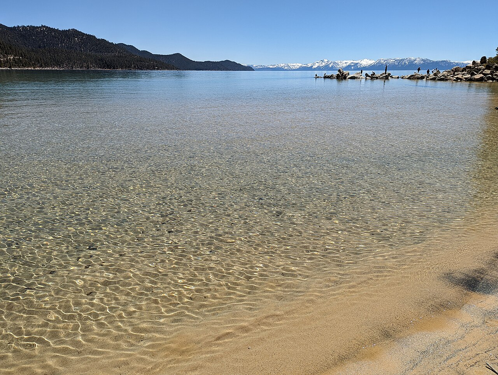
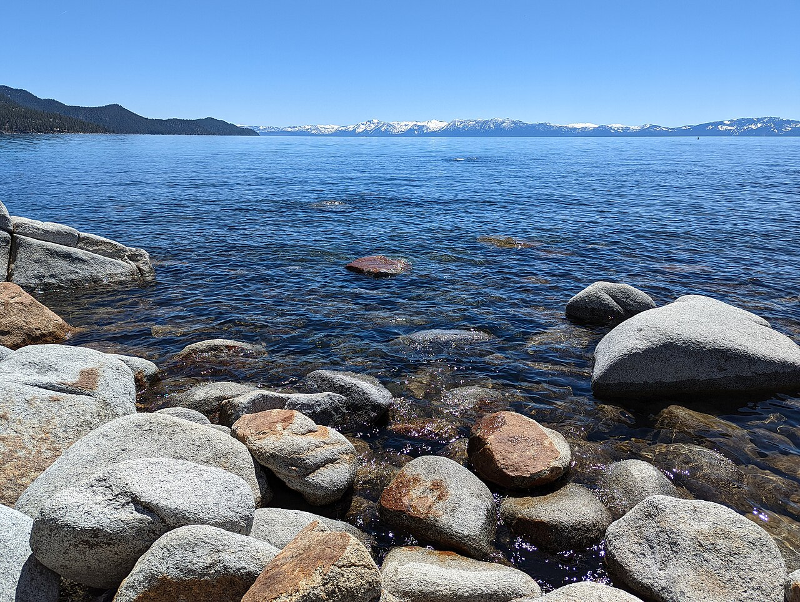
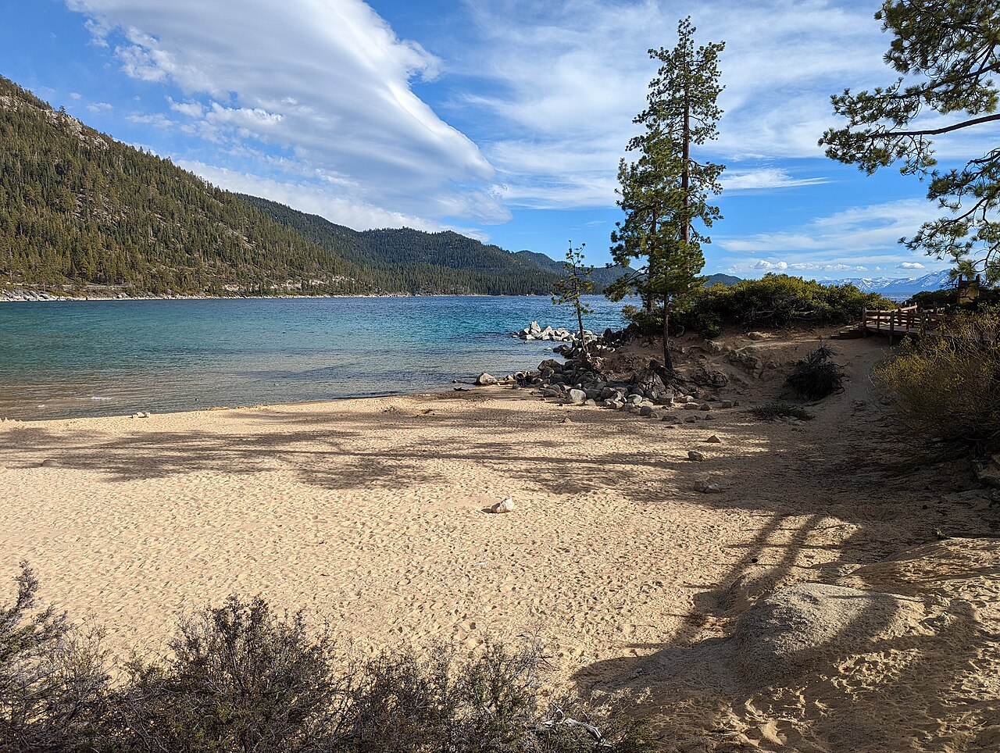

South Lake Tahoe · Seven-day family trip
Tahoe Trip
Travelers: You, Amy, Xander, Felix, Dennis, and Jesse (optional)
Trip at a Glance
Car plan
| Arrival drive — Sat 9/26 | During the stay |
|---|---|
| Your car: You + Amy + Jesse + Xander; stop at the family graves before continuing to Tahoe. Other car: Dennis + Felix; coordinate where and when to regroup. | Keep the car seat, stroller, and Xander bag together. Choose the easier-entry car for Felix; use the second car for active outings, grocery runs, and the early charter. |
At the VRBO
Good low-effort options around naps or on the flex day. Bring tennis gear if anyone plans to play, supervise Xander closely near the dock and hot tub, and follow posted community rules.
Sat Sept 26 — Graveside Visit & Arrival
| Time | Plan | Notes |
|---|---|---|
| Before Tahoe | Your car (You + Amy + Jesse + Xander) stops at the family graves for the death anniversary | Confirm cemetery route, flowers, and visit time; plan Xander's car nap around the stop |
| Drive | Dennis + Felix travel in the other car | Share ETA and decide whether to regroup before check-in or at the VRBO |
| Early PM | Regroup at 2028 Garmish Ct, unpack, Xander nap 1–3pm | Share live ETAs between cars; photo driveway/parking |
| 3:30pm | Grocery run (Car B: You + Dennis) — Raley's / Safeway South Lake | Stock milk, snacks, diapers, breakfasts, dinners |
| 4:30pm | Easy outing (Car A): Tahoe Keys beach / Kiva Beach — paved, <0.5 mi | Felix stays in car or chair at viewpoint if tired |
| 6pm | Home-cooked dinner, early bed | Acclimate to altitude; no alcohol pressure for Felix |
Book: nothing today. Confirm fishing charter and Spirit of Tahoe cruise reservations tonight.
Sun Sept 27 — Heavenly Gondola + Easy Afternoon
| Time | Plan | Mobility |
|---|---|---|
| 9am | Heavenly Gondola (Heavenly Village, ~10 min from house). Ride up, observation deck, coffee. | Minimal walking; confirm accessibility and fall operating hours |
| 12pm | Picnic or casual lunch near Heavenly Village | Keep the afternoon light before Xander's nap |
| 1–3pm | Xander nap at house; optional shops or very short Van Sickle outing | Split cars if helpful |
| 4pm | Tahoe Keys / Kiva Beach or playground time | Benches/chair for Felix; easy turnaround |
| 6pm | Sheet-pan chicken, potatoes, and vegetables at the VRBO | Early dinner for Xander |
Sunday is now the gondola day so the cruise can move off the busier weekend. Confirm the gondola's late-September schedule before booking.
Mon Sept 28 — Fishing Charter Day
- Early morning fishing car: You + Dennis + Jesse + Felix. Allow roughly 5 hours; the exact check-in time and marina depend on the selected charter. Request easy boarding, nearby parking, secure seating, weather protection, and a bathroom for Felix.
- 9am–12pm family car: Amy + Xander — Taylor Creek Rainbow Trail (paved 0.5-mi loop, salmon viewing in fall if running) + visitor center.
- Afternoon: All regroup at house for Xander nap. Backyard / Keys lagoon walk (<1 mi).
- Dinner: Fish tacos if there is suitable catch; chicken/bean tacos as the no-catch backup.
Tue Sept 29 — Emerald Bay on the Spirit of Tahoe
| Time | Plan | Mobility |
|---|---|---|
| 8–9:30am | Breakfast and an easy morning at the VRBO | Keep the morning low-key before the cruise |
| 10am | Leave for Ski Run Marina; allow time to park and use the public restroom | The marina is at 900 Ski Run Blvd |
| 10:30am | Check in at the Tahoe Cruises ticket office in the marina plaza | Official guidance requires arrival 30 minutes before departure |
| 11am–1pm | Spirit of Tahoe day cruise to Emerald Bay | Two hours; indoor and outdoor seating; food and beverages available onboard |
| 1:15–3:30pm | Return to the VRBO for a quick lunch if needed, nap, and quiet time | Xander may also begin his nap on the boat or drive back |
| 6pm | Pasta, salad, and garlic bread at the VRBO | Early dinner for Xander |
BALLYS10 during checkout. Confirm the discount appears before paying.The operator does not permit outside food or drinks, but sells both onboard. Call ahead to ask whether Xander's shelf-stable milk and toddler snacks qualify for an exception. Use the marina restroom before boarding, bring Xander's well-fitting toddler PFD, and follow all crew instructions.
Wed Sept 30 — East Shore Drive (Sand Harbor)
- 8:30am: Both cars to Sand Harbor State Park (needs day-use reservation mid-Apr–mid-Oct — book ahead). Boardwalk, shallow water, shade. Go early — parking fills.
- Midday: Bonsai Rock pull-off (short walk; Felix stays at overlook, others go down).
- Afternoon: Return for nap. Low-key: library, community pool / hot tub if access is confirmed, or a shore-fishing demo for Xander at Keys lagoon.
- Sunset: Nevada Beach / Edgewood sunset viewpoint (drive-up).
Sand Harbor preview
{kind=link}

{kind=link}

{kind=link}

These photos were taken in May 2022; late-September water level, snow cover, foliage, and crowds may look different. Select any photo to open its original Wikimedia Commons page.
Thu Oct 1 — Flex / Low-key Day
- Buffer day: repeat favorite (gondola, beach, Taylor Creek) or rest.
- Stay-at-home option: tennis courts, playground, hot tub, and time by the private dock.
- Option: drive to Emerald Bay Lookout (Hwy 89). The paved overlook is roughly 100 yards from the lot.
- Option: Tallac Historic Site (paved, short, benches) — good Felix outing; Xander likes ducks/lawn.
- Shore fishing rental for Dennis/You while Xander naps.
- Farewell dinner reservation — pick easy-parking South Lake spot (see Bookings tab).
Note: some USFS facilities (e.g. Round Hill Pines) close Oct 1 — have backup beach (Nevada Beach, Kiva).
Fri Oct 2 — Departure
Host checkout checklist
- Load and start the dishwasher.
- Remove personal items and leftover food and drinks; take out the trash.
- Turn off the lights and lock the doors.
- Close and secure all windows, lower the shades, and set the heat to 55°F if winter conditions apply.
- Clean and cover the BBQ if it was used.
Drive home
- Check out, coordinate both cars' routes and lunch stop, and share estimated arrival times.
- Plan Xander's nap for the drive and split driving shifts as needed.
Fishing Guide & Price Comparison
Lake Tahoe is open to fishing year-round. Late September is the cooling-water fall transition: trout become more active, while kokanee begin concentrating for their spawning migration.
What is catchable in late September?
| Species | Late-September outlook | How it is targeted |
|---|---|---|
| Lake trout (Mackinaw) | Most reliable charter target. NDOW says lake trout make up roughly 50–90% of Lake Tahoe angler catch. | Deep trolling or jigging from a boat |
| Kokanee salmon | Catchable, but timing-dependent. Kokanee make up about 25% of catch. Late September is near their fall staging/spawn transition, when schools may gather near tributary mouths. | Slow trolling with downriggers, small spinners, or hoochies; ask the captain in advance |
| Rainbow trout | Realistic secondary target. Rainbows make up about 16% of catch and stocked fish are also available from public-access shore areas. | Top-line trolling; lures, bait, or flies near drop-offs |
| Brown trout | Possible but uncommon. Wild browns make up less than 3% of catch, though trophy fish are present. | Trolling or working shallow-to-moderate drop-offs |
| Lahontan cutthroat | Possible bonus fish. NDOW says 100,000 are slated for stocking in 2026 and recent stocking commonly occurs in June, July, and September, but they are not the primary charter target. | Public-access areas or opportunistically from the boat |
Best currently operating charter options
Shortlist checked Sept 15, 2026. These operators have an active first-party site or 2026 booking page, published pricing, and a substantial review trail. Review platforms count and score reviews differently, so the ratings are a confidence signal—not a perfect head-to-head ranking. Prices can change and may exclude tax, booking fees, or gratuity.
| Operator | Review signal | Trip / departure | Shared for 4 | Private for 4 | Why it made the cut |
|---|---|---|---|---|---|
| Tahoe Topliners Best overall fit | 5.0/5 · 84 FishingBooker reviews | 5 hours; South Lake Tahoe meeting point—confirm exact dock | $1,100 $275 each | $1,100 $275 each | The private boat costs the same as four shared seats. The current listing shows a toilet, tackle, drinks, and catch cleaning; Captain Mike has operated since 1996. |
| Mile High Fishing Charters Closest | 4.9/5 · 136 Birdeye reviews | 4.5+ hours; Tahoe Keys Marina, very close to the VRBO | $1,000 $250 each | $1,250 $312.50 each | Best convenience and the booking page showed availability. Confirm the exact four-person private price and whether the assigned boat has the accessibility features Felix needs. |
| Tahoe Sport Fishing Best shared price | 4.9/5 · 1,600+ Google reviews aggregated by Wanderlog | 4–5 hours; Ski Run Marina | $975.20 $243.80 each | $1,462.80 up to 6 | Largest review footprint and lowest four-seat shared total. Bait, tackle, rods, coffee, and catch cleaning are listed; confirm restroom and boarding details. |
Mile High party-size detail
The current Mile High booking screen supplied for this plan shows public seats at $250 per person and private pricing of $1,000 for 1–3, $1,250 for 4, $1,350 for 5, or $1,500 for 6. Its separate rate page has shown $1,200 for four, so treat the booking checkout total as authoritative and confirm before paying.
| Anglers | Public total | Private total | Private per person | Private premium |
|---|---|---|---|---|
| 1 | $250 | $1,000 | $1,000.00 | +$750 |
| 2 | $500 | $1,000 | $500.00 | +$500 |
| 3 | $750 | $1,000 | $333.33 | +$250 |
| 4 Your group | $1,000 $250 each | $1,250 | $312.50 | +$250 total +$62.50 each |
| 5 | $1,250 | $1,350 | $270.00 | +$100 |
| 6 | $1,500 | $1,500 | $250.00 | $0 |
This party-size table is for Mile High only. Public saves $250 versus its four-person private price, but the cross-operator comparison above shows that Tahoe Topliners currently offers a lower private price.
License cost
Each angler age 16+ needs a license. A 2026 California one-day license is $21.09, so add $84.36 to any four-person quote: Tahoe Sport shared about $1,059.56, Mile High shared $1,084.36, Tahoe Topliners shared or private $1,184.36, Mile High private $1,334.36, or Tahoe Sport private $1,547.16, before gratuity, tax, and booking fees. NDOW's 2026 guide says a California fishing license is valid anywhere on Lake Tahoe. A California annual license lasts 365 days from purchase, so do not buy it early merely to secure one.
What to ask the captain
- Say that the group is interested in both mackinaw and kokanee, then call a few days beforehand and let the current bite determine the target.
- For Felix, request easy boarding, nearby parking, a heated cabin, secure seating, and a bathroom.
- Confirm what the fare includes, gratuity expectations, cancellation terms, fish cleaning, and which license the operator wants each angler to carry.
Fishing sources: NDOW Lake Tahoe 2026 Fishing Forecast · CDFW Kokanee guidance · Mile High seasonal guide. Charter prices and amenities: the three operator/booking links in the comparison above.
VRBO Meal Plan
Planning most breakfasts and dinners at the house will make naps easier, use the kitchen, and reduce restaurant waits. Keep lunches packable for outing days.
| Day | Breakfast | Lunch | Dinner |
|---|---|---|---|
| Sat 9/26 | Before / on the road | On the road | Easy arrival-night taco bowls or rotisserie chicken |
| Sun 9/27 | Eggs, toast, and fruit | Picnic sandwiches near Heavenly | Sheet-pan chicken, potatoes, and vegetables |
| Mon 9/28 | Grab-and-go bagels, bananas, and coffee for fishing crew | Sandwiches and leftovers | Fish tacos if there is suitable catch; chicken/bean taco backup |
| Tue 9/29 | Oatmeal, yogurt, and berries | Food onboard the 11am cruise or a quick lunch immediately afterward | Pasta, salad, and garlic bread |
| Wed 9/30 | Pancakes and fruit | Sand Harbor picnic | Slow-cooker chili, cornbread, and toppings |
| Thu 10/1 | Eggs / oatmeal / leftover breakfast | Leftovers or deli lunch | Farewell dinner out |
| Fri 10/2 | Clean-out-the-fridge breakfast | Road lunch; pack snacks for both cars | After arrival home |
First grocery run
- Breakfast: eggs, bread, oatmeal, yogurt, berries, bananas, pancake mix, coffee, milk.
- Lunch/snacks: sandwich bread/wraps, deli fillings, fruit, cut vegetables, hummus, crackers, pouches, and Xander's usual snacks.
- Dinners: rotisserie chicken or taco ingredients, chicken, potatoes, vegetables, pasta, sauce, salad kit, garlic bread, chili ingredients, cornbread, tortillas, and taco toppings.
- Drinks: water/seltzer, coffee/tea, milk, and nonalcoholic drinks Felix likes.
Xander (2yo) — When to Pack
🌙 Load the night before
☀️ Add the day of departure
Packing strategy: place the departure-morning items together in one visible basket the night before. Keep the road diaper kit and food bag in the passenger compartment rather than buried in the trunk. Checkmarks last only until the page is refreshed or closed.
Everyone — What to Bring
| Person | Bring |
|---|---|
| You (34) + Amy (34) | Layers (fleece, puffy, windbreaker), hiking shoes + camp shoes, swimsuit + towel, headlamp, cooler, medications, camera |
| Felix (74) | Cane / trekking poles, folding camp chair + cushion, warm layers + blanket for boat, medications + list, easy-slip shoes, sunglasses, earplugs, books, polarized sunglasses, and fishing license if fishing. No alcohol — bring NA drinks he likes. |
| Dennis (38) + Jesse (~55) | Fishing license (CA 1-day or 365-day, buy online shortly before trip), layers, polarized sunglasses, daypack, water shoes |
| Shared (house) | Groceries plan, paper towels, trash bags (bear bins), laundry pods, nightlights, power strip, paper maps (spotty signal), windshield scraper, tire check, board games, first-aid + altitude meds |
What to Book — Links & Day Mapping
| Book | For Day | Link / Search | Lead time |
|---|---|---|---|
| Spirit of Tahoe Emerald Bay Day Cruise — Ski Run Marina | Tue 9/29, 11am | Cruise details and booking • coupon code BALLYS10 | Book the 11am sailing; confirm the coupon discount at checkout and arrive by 10:30am. |
| Fishing charter — selected operator | Mon 9/28 AM | Tahoe Topliners • Mile High booking • Tahoe Sport Fishing | Call Topliners first for the $1,100 private trip; confirm its exact dock and Felix's boarding, seating, shelter, and restroom needs. Keep Mile High as the closest backup. |
| CA fishing licenses (1-day or 365-day) | Mon 9/28 | CDFW license details • online sales | Buy shortly before fishing. The annual license starts on purchase and lasts 365 days—do not buy early merely to secure one. |
| Heavenly Gondola | Sun 9/27 AM | skiheavenly.com — confirm fall ops | 1 wk / day-of |
| Sand Harbor day-use reservation | Wed 9/30 AM | NV State Parks — Sand Harbor (reservations required mid-Apr–mid-Oct) | ASAP — releases in tiers, weekends fill |
| Farewell dinner reservation | Thu 10/1 | Pick South Lake easy-parking spot (Edgewood / Heavenly Village) | 1–2 wks |